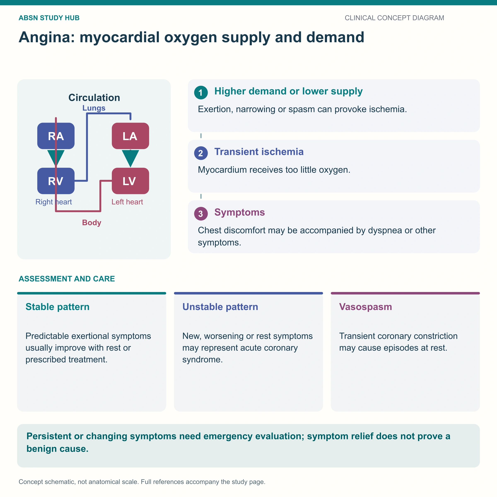

Stable vs. Unstable — the same pipe, two different stories
Angina is the heart muscle shouting that it isn't getting enough oxygen. Stable angina is chest pain induced by physical activity — stairs, yard work, sex, anything that causes exertion — and it stops when the activity stops. Unstable angina is pain at REST — a warning sign for an MI, because the coronary arteries are more severely narrowed.
📄 Simple Nursing original — opens in Drive →
The heart muscle feeds itself through the coronary arteries. Narrow those pipes and the muscle starts complaining.
EXAM TIP The coronaries branch off the aorta just above the aortic valve and wrap around the outside of the heart. They fill during DIASTOLE — when the heart relaxes. That is why a very fast heart rate makes angina worse: less relaxing time = less coronary filling.

Answer first: angina happens the moment oxygen DEMAND outruns oxygen SUPPLY. Everything you do for a client with angina either lowers demand or raises supply.
Angina starts with atherosclerosis. Look at the wall layers: endothelium → intima → media (smooth muscle) → adventitia. Plaque builds inside the intima and pushes into the lumen.
Classic exertional angina — it shows up when you work, and it leaves when you stop.
Stable angina is chest pain induced by any physical activity — walking up stairs, working in the yard, or even sex. Anything that causes exertion! There is less oxygen delivered to the heart muscles during the physical exertion, so the muscle produces pain — the heart saying “HEY, I don't have enough oxygen!” Naturally, the pain stops when the physical activity stops.
Pain at rest. This is acute coronary syndrome until proven otherwise.
Pain at rest! This is a warning sign for an MI (heart attack). It is the more severe angina because it means more severe narrowing of the coronary arteries, resulting in less oxygen to the heart muscles.
Same artery, two amounts of clot. Partial occlusion starves the muscle (ischemia — reversible). Total occlusion kills it (infarction — permanent).
HIGH YIELD Unstable angina and NSTEMI look identical at the bedside. The difference is the troponin: unstable angina = troponin stays normal; NSTEMI = troponin rises. Both are treated as acute coronary syndrome.
Not everyone clutches their chest. Women, older adults, and people with diabetes more often present with:
❌ Never rule out cardiac pain just because it is not “crushing substernal chest pain.”
One table. If you own this table you own the question.
| Feature | 🟢 STABLE | 🔴 UNSTABLE | 🌙 VARIANT | 💀 MI |
|---|---|---|---|---|
| Trigger | Physical exertion, cold, stress, heavy meal | At rest or minimal effort | Often at rest, night / early morning | Any time, often at rest |
| Mechanism | Fixed atherosclerotic narrowing | Plaque rupture + partial thrombus | Coronary artery vasospasm | Total occlusion → necrosis |
| Relieved by | Rest and/or nitroglycerin | Not reliably relieved | Nitroglycerin / calcium channel blockers | Not relieved — needs reperfusion |
| Duration | Brief — minutes | Longer, more frequent, more intense | Short but recurrent | Prolonged |
| Troponin | normal | normal | usually normal | ELEVATED |
| Bottom line | Predictable · manage & teach | ACS — emergency | Spasm — see NG-098 | Muscle death — see NG-071 |
Non-modifiable: age, male sex, family history, ethnicity. See NG-145 Atherosclerosis.
The drug the exam loves. Read every line — most of these are pure test points.
Nitroglycerin is a vasodilator. It relaxes the smooth muscle in blood vessels, which dilates the veins (less blood returning to the heart = less preload = less work) and dilates the coronary arteries (more oxygen delivered). Net effect: oxygen demand drops and oxygen supply rises — the pain stops.
❌ NO “-afil” drugs with nitroglycerin. Sildenafil, tadalafil, vardenafil + nitrates = profound, potentially FATAL hypotension.
Both drug classes are vasodilators. Stacked together the blood pressure can bottom out and the client can arrest. Always ask about erectile-dysfunction and pulmonary-hypertension medications before giving nitroglycerin — including the ones bought without a prescription.
Practice varies on the exact interval, but the standard teaching is that nitrates must be withheld for at least 24 hours after sildenafil or vardenafil, and at least 48 hours after tadalafil.
Answer first: 0.4 mg SL tablet (or metered spray), 1 dose, then repeat every 5 minutes up to 3 doses total. Call 911 if the pain is unimproved or worsening 5 minutes after the FIRST dose — do not wait for all three.
🗓️ Replace the supply every 6 months (or per the manufacturer's expiration) — old tablets lose potency.
TEST TIP Patch fell off more than an hour ago and chest pain starts? Take the SL nitro (tablet or spray) — a new patch can take 40–60 minutes to work.
NO chest pain during daily activities — “I can comb my hair, get dressed, put on make-up, and make my bed without chest pain.” That is what a successful plan looks like, and it is how the exam words the evaluation question.
Other prescribed therapies you'll see alongside nitrates: aspirin/antiplatelets, beta blockers (NG-176), calcium channel blockers (NG-195), statins (NG-242), and revascularization with PCI/stent or CABG.
These newly drawn concept diagrams consolidate the retired illustration sets. The accompanying study notes and original handout links remain on this page.